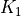

Export data nodes to various formats¶
Each data node has a export() method
that allows to export the given data node to file in a variety of available formats,
e.g. to pass it to a visualization software.
The export() method asks for a filename, and it will
write to file the result. It is possible that more than one file is written (for example,
if you produce a gnuplot script, the data will typically be in a different .dat file).
The return value of the function is a list of files that have been created.
The list of export formats depends on the specific Data plugin. The export format is
typically inferred from the file extension, but if this is not possible (or you
want to specify a given format), you can pass an additional fileformat parameter
to export().
The list of all valid export formats can be obtained calling
Data.get_export_formats() method, that returns a list of strings with all valid
formats.
If you don’t want to export directly to a file, but want to get simply the content
of the file as a string, then you can call the _exportcontent()
method, passing also a fileformat parameter.
The return value is a tuple of length 2: the first element is a string
with the content of the “main” file, while the second is a dictionary (possibly empty)
with a list of additional files that should be created/needed: the keys are filenames,
and the values are the files content.
Exporting from the command line¶
Most data types expose the export functionality on the command line.
For instance, if you want to export a StructureData object with given PK, you can
run on the command line:
verdi data structure export PK --format=FORMAT_NAME
that will export the node with the corresponding PK value in the format FORMAT_NAME.
This will print on screen the file content; a few command line options allow to change this
behaviour:
-o FILENAMEasks to write directly on a file namedFILENAME. This is compulsory in some cases, e.g. if more than one file needs to be created.-yasks to overwrite the file(s), if present. If not specified, the call will fail if any of the files to create are present.
Additional options (often format-specific) exist, and can be discovered passing the -h
option to the command line. For instance:
verdi data structure exportaccepts a number of formats includingxsf,cifandxyz, and additional parameters like--no-reduce-symmetry(to be used in combination with thetcodformat to tell AiiDA not to try to reduce simmetry in the output CIF file, etc.verdi data trajectory exportaccepts a number of formats includingxsfandcif, and additional parameters like--step NUM(to choose to export only a given trajectory step).verdi data bands exportaccepts a number of formats including (see also below) and additional parameters like--prettify-format FORMATNAME, see valid formats below, or--y-min-lim,--y-max-limto specify they-axis limits.
Export formats for specific Data types¶
As the formats are specific to the data types, here is a list of some of the export formats available for some of the AiiDA data classes.
StructureData¶
The following export formats are available:
xsf(format supported by e.g. XCrySDen and other visualization software; supports periodic cells)xyz(classical xyz format, does not typically support periodic cells (even if the cell is indicated in the comment line)cif(export to CIF format, without symmetry reduction, i.e. always storing the structure as P1 symmetry)
TrajectoryData¶
The following export formats are available:
xsf(format supported by e.g. XCrySDen and other visualization software; supports periodic cells)cif(export to CIF format, without symmetry reduction, i.e. always storing the structures as P1 symmetry)
BandsData¶
The following export formats are available:
agr: export a Xmgrace .agr file with the band plotagr_batch: export a Xmgrace batch file together with an independent .dat filedat_blocks: export a .dat file, where each line has a data point (xy) and bands are separated in blocks with empty linesdat_multicolumn: export a .dat file, where each line has all the values for a given x coordinate:x y1 y2 y3 y4 ...(xbeing a linear coordinate along the band path andyNbeing the band energies)gnuplot: export a gnuplot file, together with a .dat filejson: export a json file with the bands divided into segmentsmpl_singlefile: export a python file that when executed shows a plot using thematplotlibmodule. All data is included in the same python file as a multiline string containing the data in json format.mpl_withjson: As above, but the json data is stored separately in a different filempl_pdf: As above, but after creating the .py file it runs it to export the band structure in a PDF file (vectorial). NOTE: it requires that you have the pythonmatplotlibmodule installed. Ifuse_latexis true, it requires that you have LaTeX installed on your system to typeset the labels, as well as thedvipngbinary.mpl_png: As above, but after creating the .py file it runs it to export the band structure in a PDF file (vectorial). NOTE: this format has the same dependencies as thempl_pdfformat above.
Label prettifiers¶
AiiDA provides a number of functions to “prettify” the labels of band structures
(if labels are present in the data node), i.e., replace GAMMA with
or K_1 with  for instance.
This makes sense for some output formats (e.g. Xmgrace, Gnuplot,
matplotlib).
The prettifier functions are defined as methods of the
Prettifier class.
and can be obtained calling
Prettifier.get_prettifiers().
The prettifiers should be chosen depending on two aspects:
how the raw labels are stored in the database. Two types exist currently:
seekpath, as used in theseekpathmodule, where Greek letters are written explicitly (e.g.GAMMA) and underscores are used to indicate a subscript (K_1); and the “old”simpleformat, where is indicated withGand there is no underscore symbol).depending on the output format: xmgrace has a specific syntax for Greek letters and subscripts, matplotlib uses LaTeX syntax, etc.
Most export formats already decide which prettifier is best to use, but if you need
to change it, you can do it passing the prettify_format parameter to the
export() method. Valid prettifiers include:
agr_seekpath: format for Xmgrace, usingseekpathraw label syntaxagr_simple: format for Xmgrace, usingsimpleraw label syntaxlatex_simple: format for LaTeX (including dollar signs), usingseekpathraw label syntaxlatex_seekpath: format for LaTeX (including dollar signs), usingsimpleraw label syntaxgnuplot_simple: format for GNUPlot (Unicode for Greek letters, LaTeX syntax without dollar signs for underscores), usingseekpathraw label syntaxgnuplot_seekpath: format for GNUPlot (Unicode for Greek letters, LaTeX syntax without dollar signs for underscores), usingsimpleraw label syntaxpass: no-op prettifier: leaves all strings unchanged to their raw value